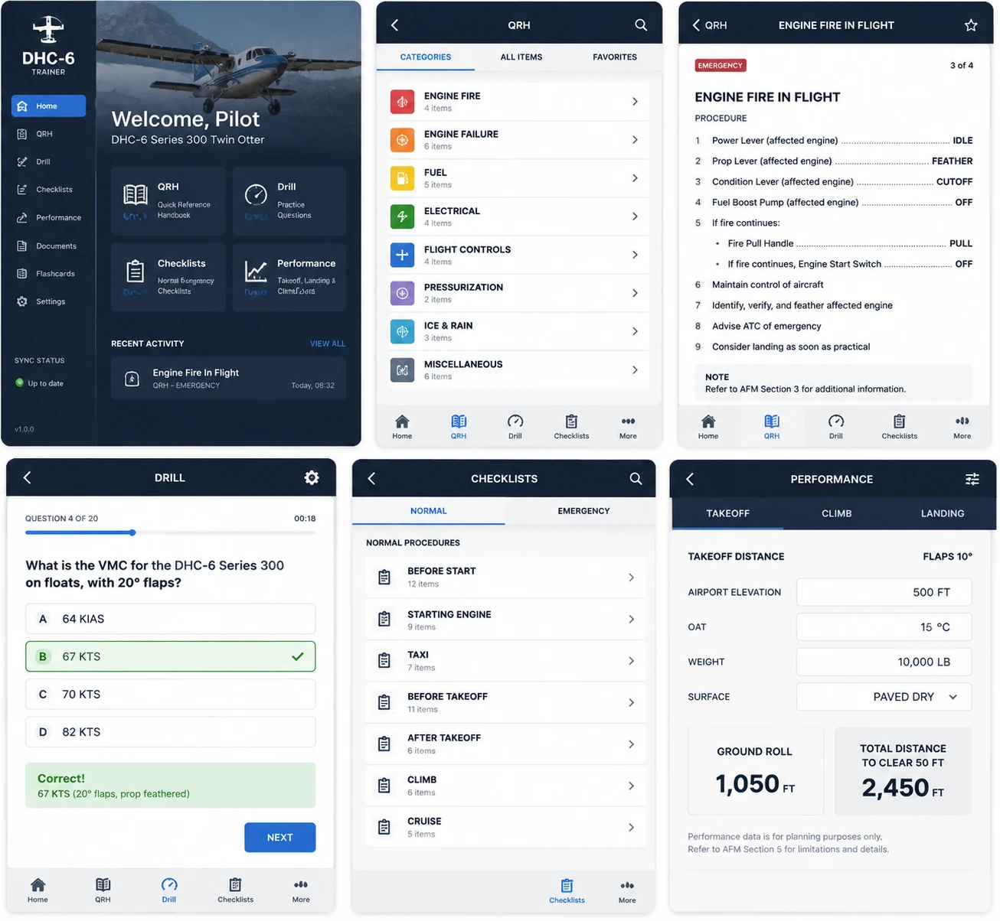

Immediate recall + full flow
Study memory items first, then continue into the complete checklist-style procedure review.
Portable Twin Otter study for QRH memory items, full checklist review, MCC callouts, drills, flashcards, cockpit familiarisation, aircraft state, systems, and performance practice.

Study memory items first, then continue into the complete checklist-style procedure review.
Practice PF/PM wording, timing, expected responses, and crew coordination from your phone.
Keep takeoff, climb, landing, and planning practice available when you are away from the desk.
DHC-6 study often happens between flights, before sim sessions, during line prep, or in accommodation. The phone version keeps the core training tools available without carrying binders, notes, or a laptop.